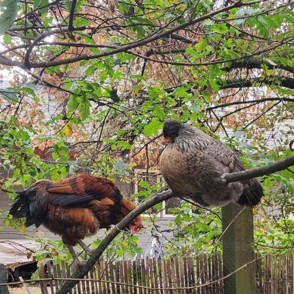

Chickens at Southlands Farm in Vancouver, Canada.
About
Nerx Technologies is by Roxanne, a java programmer by day.
Games are made in Godot. See my large collection of game jams and experiements in Portfolio and published game Mignon. I don't have my own chickens (I wish!) but I can tell you a couple spots around town to see some.
In the spirit of everyone having their own website again here are some great websites.
Godot Manual Where it all starts. Once you've downloaded Godot you can head on over to the documentation. Unlike other game engines it doesn't assume you already know how to make games, the "Getting Started" and "Manual" sections are literal.
OpenGameArt.org A great resources for temp or inspirational art.
Aseprite Drawing program tailored very much for pixel art. Some tips: Hold alt-click to use the eye dropper tool and then release to return to the last tool. Holding shift with the line drawing tool at an angle will give you the standard angle for isometric art. Shift-S will toggle Snap to Grid, very usefull for selecting exactly one tile.
The Public Domain Review A great website for public domain artwork, what more is there to say? This link goes directly to my favourite.
GIMP Is it good? No. But it gets the "image manipulation" job done. More or less.